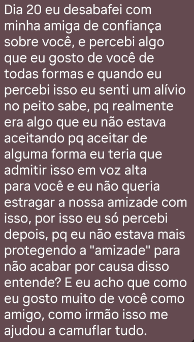
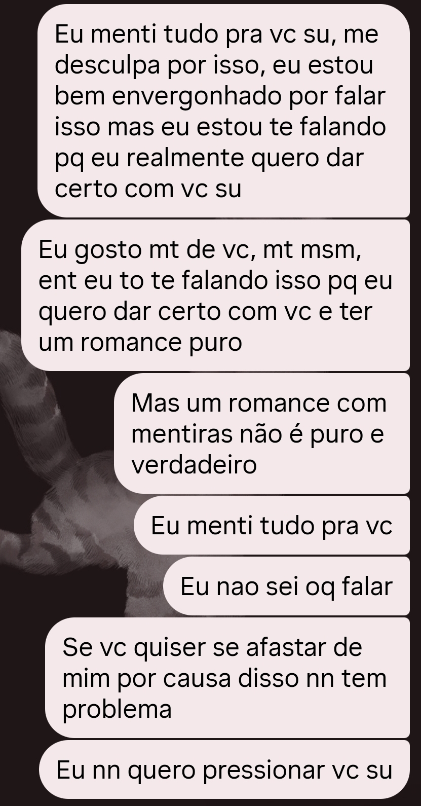
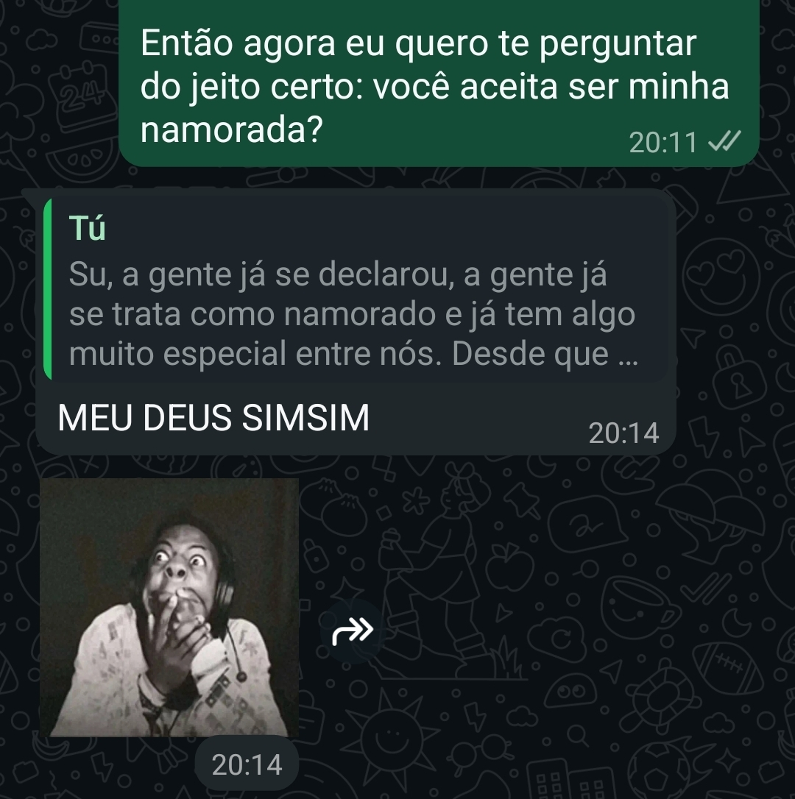
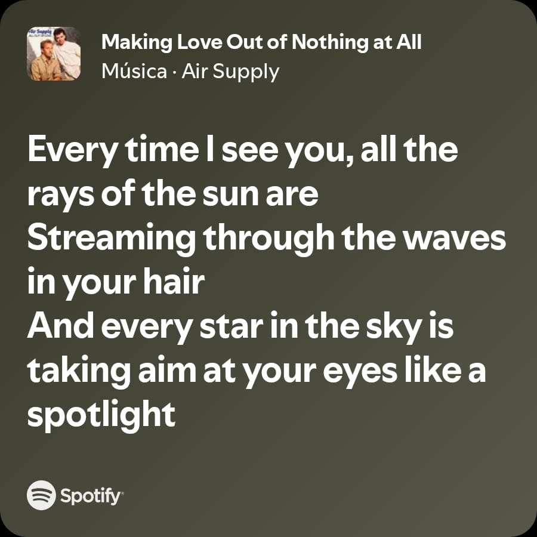
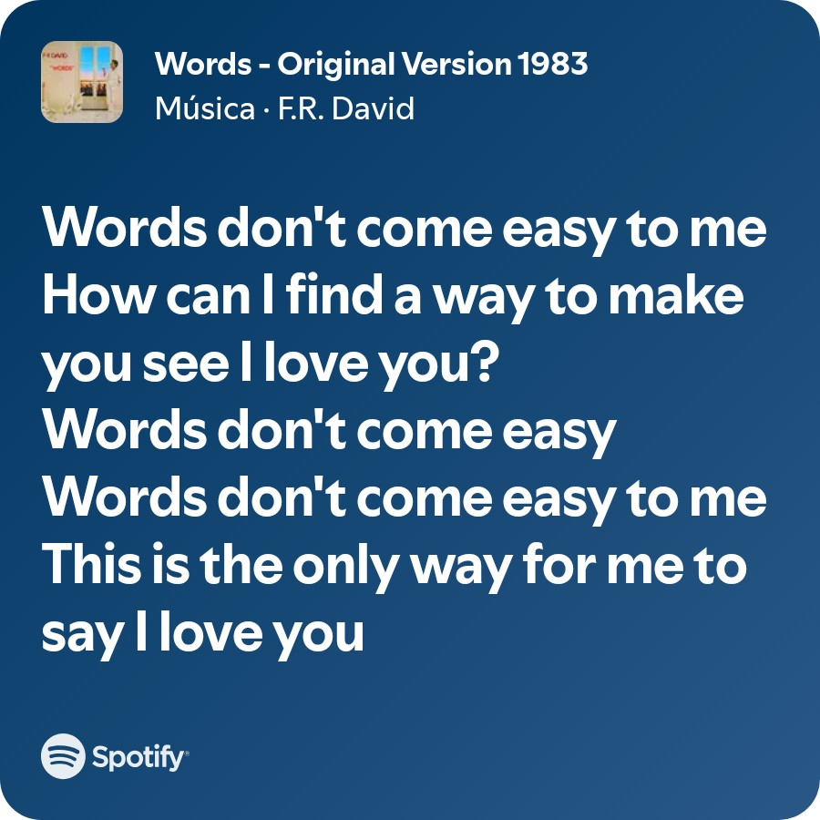
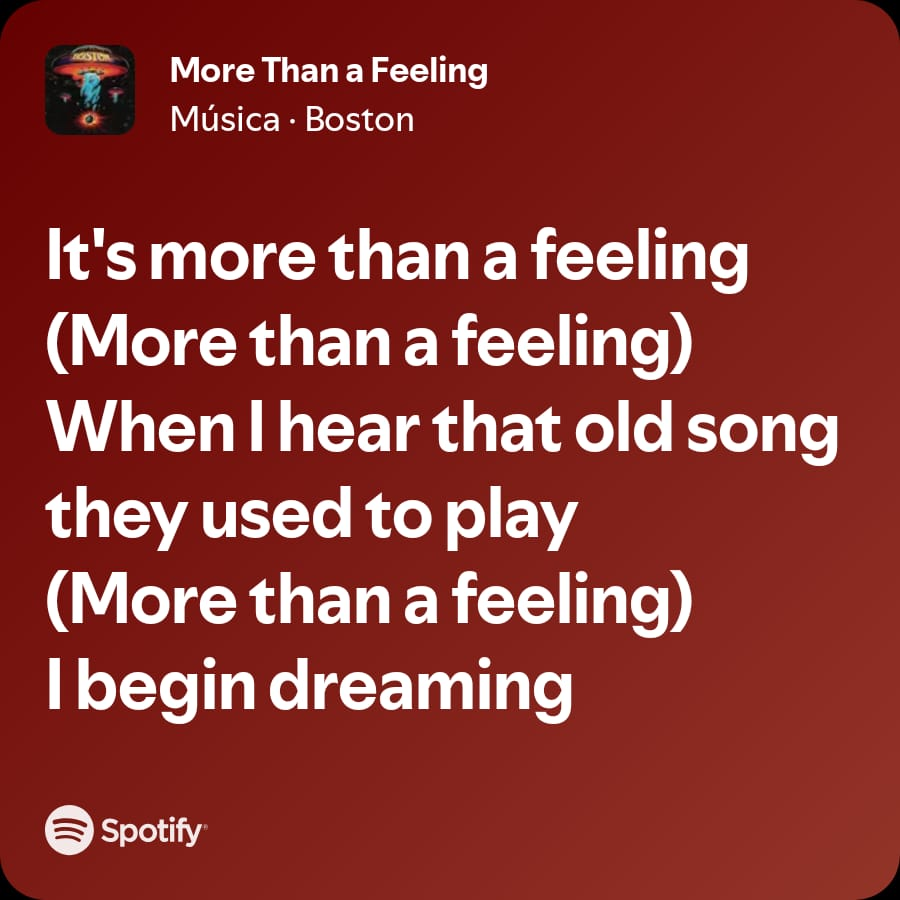
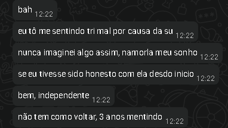

Memorias
cada momento virou parte da nossa história.

31 março 2026 — 14:43 ♡sua declaração
eu lembro de ficar completamente em choque lendo aquilo KKKK, não pq achei que vc tava zoando, mas pq eu realmente não esperava que aquilo fosse acontecer, mesmo sendo meio óbvio eu ainda precisava perguntar se era no sentido romântico mesmo pq tava com medo de entender errado e passar vergonha KKKK eu já tinha começado a perceber algumas coisas antes mas tentava ignorar pq nossa relação era muito importante pra mim, eu gostava da forma que vc tava presente na minha vida e sinceramente tinha medo de estragar tudo, aí teve aquele dia que eu perguntei se vc deixaria uma futura filha sua namorar comigo e quando vc respondeu que não eu meio que reprimi tudo de vez e tentei convencer a mim mesmo que era melhor esquecer esse sentimento naquele momento eu fiquei muito feliz mas depois comecei a voltar pra realidade e pensar que provavelmente não tinha como aquilo dar certo, eu usava fake, menti praticamente tudo sobre mim e isso me destruía pq ao mesmo tempo que eu gostava muito de vc eu também sentia que tava enganando alguém que eu nunca queria machucar, eu falava pro matheus várias vezes “em algumas semanas isso acaba” pq sinceramente eu não conseguia imaginar um cenário onde aquilo realmente daria certo, ainda mais comigo escondendo quem eu era de vdd

1 abril 2026 — 14:43 ♡finalmente sendo sincero
no dia que eu fui sincero com vc, ironicamente era 1 de abril KKKK, o que torna tudo isso ainda mais absurdo, foi o dia que eu contei que literalmente tudo era mentira, e sinceramente eu tava tão nervoso que aquilo tava me dando dor física, parecia que meu peito tava sendo esmagado o tempo inteiro, eu não tive nem coragem de mandar a mensagem pra vc, tive que pedir pro matheus enviar por mim pq eu simplesmente não conseguia apertar o botão eu realmente achei que ali tinha acabado tudo, pq por mais que eu gostasse muito de vc eu também entendia o quão errado aquilo era, então enquanto eu esperava sua resposta eu só conseguia pensar que provavelmente era o fim mas quando vc começou a falar comigo e me tratar bem mesmo depois de tudo aquilo, sinceramente parecia que tinha tirado uma bigorna do meu peito, eu lembro até hoje da sensação de alívio que eu senti lendo suas mensagens e acho que foi ali que eu percebi que por mais bagunçado que tudo tivesse sido, o amor que eu sentia por vc sempre foi a parte mais sincera de mim

22 abril 2026 — 20:11 ♡20:11
eu lembro que fiquei encarando a mensagem por um tempão antes de mandar KKKK, pq mesmo a gente já se tratando praticamente como namorados, aquilo ainda parecia muito importante pra mim e sinceramente eu tava nervoso num nível absurdo KKKK, meu coração tava acelerado o tempo inteiro enquanto eu esperava sua resposta, aí literalmente 3 minutos depois vc aceitou e nós dois ficamos que nem bestas mandando figurinha um pro outro e repetindo que não tava acreditando que aquilo realmente tava acontecendo KKKKK e tem uma coisa que eu acho muito louca até hoje, no mesmo dia antes de te pedir em namoro eu tinha comprado a aliança, não sei explicar direito o motivo, acho que alguma parte de mim já sabia que eu queria vc comigo de verdade
Making Love Out Of Nothing At All

essa música é literalmente como eu me sinto com vc até hoje principalmente essa parte “every time i see you, all the rays of the sun are streaming through the waves in your hair” porque era exatamente, e ainda é, a sensação que eu tenho toda vez que vejo vc, você é bonita num nível impossível de explicar direito e o resto da música também me lembra muito nós dois, porque ela fala sobre alguém que talvez nn saiba fazer tudo perfeitamente, talvez nem consiga explicar o tamanho do que sente, mas que ama alguém tanto ao ponto de fazer qualquer coisa por ela e acho que nunca existiu uma música que descrevesse tão bem a forma que eu amo você
Words Don't Come Easy

acho que eu vivia tentando encontrar um jeito de fazer você entender o quanto eu te amava, mesmo sem conseguir explicar isso direito foi por isso que eu te dediquei essa música, porque parecia que ela dizia exatamente tudo que eu sentia e nunca conseguia colocar em palavras sozinho
More Than A Feeling

essa música nunca foi muito pela letra pra mim KKKK, foi mais pela sensação que ela me causa desde a época que eu coloquei ela na playlist pra você, ela já tinha virado “você” na minha cabeça, pq sempre me dava uma sensação absurda de felicidade, tipo aquela sensação de que a vida finalmente tá dando certo e acho que com o tempo eu só associei isso cada vez mais a você, então hoje toda vez que essa música toca eu automaticamente penso em você, pq vc acabou virando exatamente a sensação boa que ela me passa ♡
e sinceramente eu acho muito louco perceber como em só 1 mês de namoro nós já vivemos tanta coisa KKKK, pq quando eu paro pra olhar tudo desde o começo parece muito mais tempo, talvez porque praticamente nada entre nós foi superficial quando vc se declarou pra mim eu lembro que primeiro eu fiquei feliz num nível absurdo, tipo genuinamente feliz mesmo, pq apesar de eu tentar ignorar aquilo por medo, no fundo eu já sentia muita coisa por vc fazia tempo mas depois daquela felicidade inicial eu comecei a voltar pra realidade e me sentir mal pra caramba, pq ao mesmo tempo que eu gostava muito de vc eu também sabia que praticamente tudo sobre mim era mentira, então eu comecei a pensar que provavelmente não existia nenhum jeito daquilo terminar bem e até hoje eu acho muito louco perceber que vc se declarou pra mim dia 31 de março às 14:43… e literalmente no dia seguinte, 1 de abril às 14:43, foi quando eu fui sincero sobre tudo tipo exatamente 24 horas depois KKKK e eu sei que vc gosta dessas coincidências de horário e dessas coisas meio “escritas”, então sinceramente acho impossível não achar isso muito simbólico também pq foi como se exatamente no mesmo horário que tudo começou, eu tivesse decidido parar de esconder quem eu era de verdade e ironicamente tudo isso aconteceu justamente no dia 1 de abril KKKK, que teoricamente é o dia da mentira, mas acabou virando o dia que eu finalmente fui sincero com vc

eu lembro até hoje de conversar sobre isso com o matheus e falar várias vezes que “em algumas semanas isso acaba”, pq sinceramente eu não conseguia imaginar um cenário onde vc descobriria tudo e continuaria comigo depois e acho que a pior parte é que naquele momento eu nem pensava em contar a verdade pra vc, não pq eu queria continuar mentindo por maldade, mas pq eu tinha vergonha num nível absurdo, vergonha de vc me odiar, vergonha de vc achar ridículo, vergonha de perder a pessoa que tinha se tornado a mais importante pra mim então eu meio que tentava me convencer de que era melhor só deixar aquilo morrer aos poucos e depois falar que eu queria só amizade, pq na minha cabeça isso iria doer menos do que contar toda a verdade e ver vc ir embora me odiando só que aí o matheus começou a conversar sério comigo sobre tudo isso e me fez refletir muito, principalmente pq eu vi literalmente acontecer com ele uma situação parecida ele começou mentindo pra isa, mas acabou gostando dela de verdade, só que a mentira foi virando uma bola de neve tão grande que depois ele não conseguia mais desmentir nada, e no final ela acabou descobrindo tudo da pior forma possível e eu lembro dele falando sobre o quanto se arrependia disso até hoje, do quanto queria ter contado antes enquanto ainda dava tempo de fazer as coisas do jeito certo e acho que ver aquilo tão de perto mexeu muito comigo, pq pela primeira vez eu consegui enxergar exatamente o que iria acontecer comigo e com vc se eu continuasse escondendo tudo então eu engoli toda vergonha que eu sentia, todo medo, toda vontade de fugir daquela situação e contei a verdade pra vc, mesmo achando que provavelmente seria o fim de tudo e sinceramente acho que uma das coisas mais bonitas que vc fez por mim foi ficar mesmo depois de conhecer as partes mais bagunçadas de mim, pq eu realmente não tava acostumado com alguém escolhendo continuar comigo depois de ver meus erros e eu sei que nossa relação não é perfeita KKKK, nós dois pensamos demais às vezes, ficamos inseguros, sentimos medo de perder um ao outro e criamos mil cenários na cabeça sem necessidade, mas acho que justamente por isso tudo parece tão verdadeiro pra mim pq nada entre nós parece vazio, até os momentos difíceis tiveram amor escondido no meio deles e talvez seja isso que faz eu amar tanto nossa história, pq ela não parece uma coisa artificial onde tudo aconteceu facilmente, parece duas pessoas completamente perdidas tentando cuidar uma da outra do jeito que conseguiam e mesmo depois de todas as inseguranças, de todos os “isso provavelmente não vai dar certo”, de todas as noites ruins e de tudo que aconteceu antes da gente finalmente ficar juntos de verdade, nós acabamos aqui 1 mês depois ainda nos escolhendo todos os dias ♡